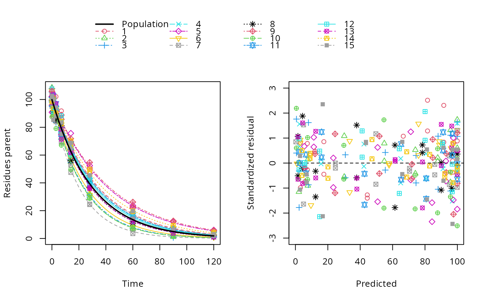

The R code used to create this data object is installed with this package in the 'dataset_generation' directory.
Examples
# \dontrun{
sfo_mmkin <- mmkin("SFO", ds_sfo, quiet = TRUE, error_model = "tc", cores = 15)
sfo_saem <- saem(sfo_mmkin, no_random_effect = "parent_0")
plot(sfo_saem)

# }
# This is the code used to generate the datasets
cat(readLines(system.file("dataset_generation/ds_mixed.R", package = "mkin")), sep = "\n")
#> # Synthetic data for hierarchical kinetic models
#> # Refactored version of the code previously in tests/testthat/setup_script.R
#> # The number of datasets was 3 for FOMC, and 10 for HS in that script, now it
#> # is always 15 for consistency
#>
#> library(mkin) # We use mkinmod and mkinpredict
#> sampling_times = c(0, 1, 3, 7, 14, 28, 60, 90, 120)
#> n <- 15
#> log_sd <- 0.3
#> err_1 = list(const = 1, prop = 0.05)
#> tc <- function(value) sigma_twocomp(value, err_1$const, err_1$prop)
#> const <- function(value) 2
#>
#> set.seed(123456)
#> SFO <- mkinmod(parent = mkinsub("SFO"))
#> sfo_pop <- list(parent_0 = 100, k_parent = 0.03)
#> sfo_parms <- as.matrix(data.frame(
#> k_parent = rlnorm(n, log(sfo_pop$k_parent), log_sd)))
#> set.seed(123456)
#> ds_sfo <- lapply(1:n, function(i) {
#> ds_mean <- mkinpredict(SFO, sfo_parms[i, ],
#> c(parent = sfo_pop$parent_0), sampling_times)
#> add_err(ds_mean, tc, n = 1)[[1]]
#> })
#> attr(ds_sfo, "pop") <- sfo_pop
#> attr(ds_sfo, "parms") <- sfo_parms
#>
#> set.seed(123456)
#> FOMC <- mkinmod(parent = mkinsub("FOMC"))
#> fomc_pop <- list(parent_0 = 100, alpha = 2, beta = 8)
#> fomc_parms <- as.matrix(data.frame(
#> alpha = rlnorm(n, log(fomc_pop$alpha), 0.4),
#> beta = rlnorm(n, log(fomc_pop$beta), 0.2)))
#> set.seed(123456)
#> ds_fomc <- lapply(1:n, function(i) {
#> ds_mean <- mkinpredict(FOMC, fomc_parms[i, ],
#> c(parent = fomc_pop$parent_0), sampling_times)
#> add_err(ds_mean, tc, n = 1)[[1]]
#> })
#> attr(ds_fomc, "pop") <- fomc_pop
#> attr(ds_fomc, "parms") <- fomc_parms
#>
#> set.seed(123456)
#> DFOP <- mkinmod(parent = mkinsub("DFOP"))
#> dfop_pop <- list(parent_0 = 100, k1 = 0.06, k2 = 0.015, g = 0.4)
#> dfop_parms <- as.matrix(data.frame(
#> k1 = rlnorm(n, log(dfop_pop$k1), log_sd),
#> k2 = rlnorm(n, log(dfop_pop$k2), log_sd),
#> g = plogis(rnorm(n, qlogis(dfop_pop$g), log_sd))))
#> set.seed(123456)
#> ds_dfop <- lapply(1:n, function(i) {
#> ds_mean <- mkinpredict(DFOP, dfop_parms[i, ],
#> c(parent = dfop_pop$parent_0), sampling_times)
#> add_err(ds_mean, tc, n = 1)[[1]]
#> })
#> attr(ds_dfop, "pop") <- dfop_pop
#> attr(ds_dfop, "parms") <- dfop_parms
#>
#> set.seed(123456)
#> HS <- mkinmod(parent = mkinsub("HS"))
#> hs_pop <- list(parent_0 = 100, k1 = 0.08, k2 = 0.01, tb = 15)
#> hs_parms <- as.matrix(data.frame(
#> k1 = rlnorm(n, log(hs_pop$k1), log_sd),
#> k2 = rlnorm(n, log(hs_pop$k2), log_sd),
#> tb = rlnorm(n, log(hs_pop$tb), 0.1)))
#> set.seed(123456)
#> ds_hs <- lapply(1:n, function(i) {
#> ds_mean <- mkinpredict(HS, hs_parms[i, ],
#> c(parent = hs_pop$parent_0), sampling_times)
#> add_err(ds_mean, const, n = 1)[[1]]
#> })
#> attr(ds_hs, "pop") <- hs_pop
#> attr(ds_hs, "parms") <- hs_parms
#>
#> set.seed(123456)
#> DFOP_SFO <- mkinmod(
#> parent = mkinsub("DFOP", "m1"),
#> m1 = mkinsub("SFO"),
#> quiet = TRUE)
#> dfop_sfo_pop <- list(parent_0 = 100,
#> k_m1 = 0.007, f_parent_to_m1 = 0.5,
#> k1 = 0.1, k2 = 0.02, g = 0.5)
#> dfop_sfo_parms <- as.matrix(data.frame(
#> k1 = rlnorm(n, log(dfop_sfo_pop$k1), log_sd),
#> k2 = rlnorm(n, log(dfop_sfo_pop$k2), log_sd),
#> g = plogis(rnorm(n, qlogis(dfop_sfo_pop$g), log_sd)),
#> f_parent_to_m1 = plogis(rnorm(n,
#> qlogis(dfop_sfo_pop$f_parent_to_m1), log_sd)),
#> k_m1 = rlnorm(n, log(dfop_sfo_pop$k_m1), log_sd)))
#> ds_dfop_sfo_mean <- lapply(1:n,
#> function(i) {
#> mkinpredict(DFOP_SFO, dfop_sfo_parms[i, ],
#> c(parent = dfop_sfo_pop$parent_0, m1 = 0), sampling_times)
#> }
#> )
#> set.seed(123456)
#> ds_dfop_sfo <- lapply(ds_dfop_sfo_mean, function(ds) {
#> add_err(ds,
#> sdfunc = function(value) sqrt(err_1$const^2 + value^2 * err_1$prop^2),
#> n = 1, secondary = "m1")[[1]]
#> })
#> attr(ds_dfop_sfo, "pop") <- dfop_sfo_pop
#> attr(ds_dfop_sfo, "parms") <- dfop_sfo_parms
#>
#> #save(ds_sfo, ds_fomc, ds_dfop, ds_hs, ds_dfop_sfo, file = "data/ds_mixed.rda", version = 2)